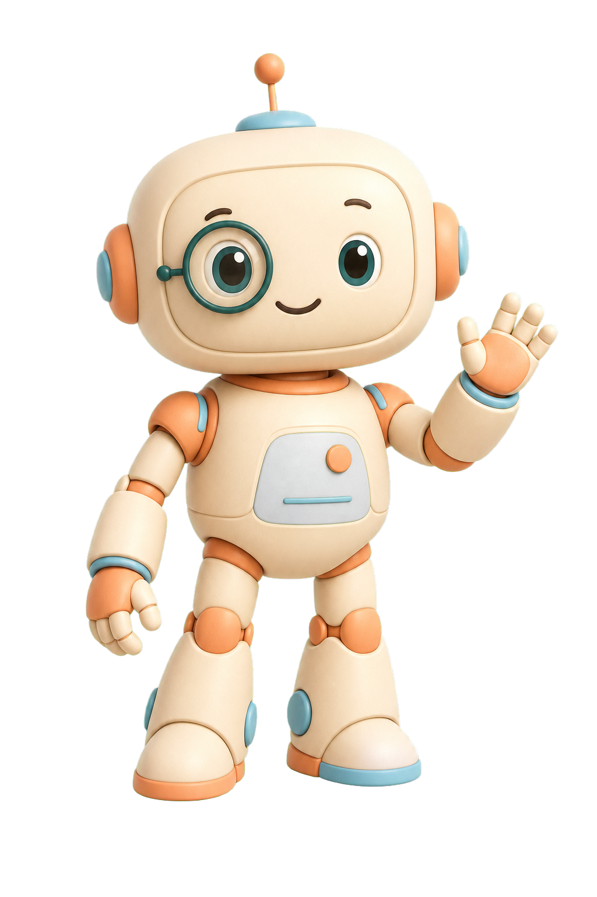

01
서비스 중
줍줍콜
무순위 청약의 접수 시작과 마감을 놓치지 않도록 살펴봐요.
- 실공고 일정 확인
- 관심 공고 알림
- 접수 상태 한눈에
로봄은 놓치면 끝나는 일상의 순간을 찾아내고,
가장 필요한 때 다정하게 알려주는 앱을 만듭니다.

필요한 순간에
정확하고 솔직하게
일상에 자연스럽게
사람이 마지막 결정
기다리고, 확인하고, 기억해야 했던 순간을
로봄의 앱이 한결 가볍게 바꿉니다.
무순위 청약의 접수 시작과 마감을 놓치지 않도록 살펴봐요.
걷기부터 러닝, 등산까지 지금 나가기 좋은 시간을 알려줘요.
러닝대회 접수 오픈과 마감, 선착순 순간을 빠르게 모아봐요.
현재 알림은 앱이 열려 있을 때 가장 안정적으로 동작해요. 로봄은 가능한 범위를 숨기지 않습니다.
자동화가 매일 살펴보고 개선하지만 마지막 결정은 사람이 합니다. 로봄은 화려한 약속보다 실제로 지킬 수 있는 기능을 먼저 만듭니다.
일상에서 자주 놓치는 순간을 찾습니다.
코드와 데이터, 실제 화면을 함께 확인합니다.
사람의 승인 뒤 안전하게 세상에 내보냅니다.
로봄은 한 사람이 AI 팀과 함께 운영하는 작은 앱 스튜디오입니다. 중요한 순간을 제때 알려주는 도구를 오래, 정직하게 만들고 있어요.
놓치면 끝나는 순간을
먼저 발견하는 앱 스튜디오.